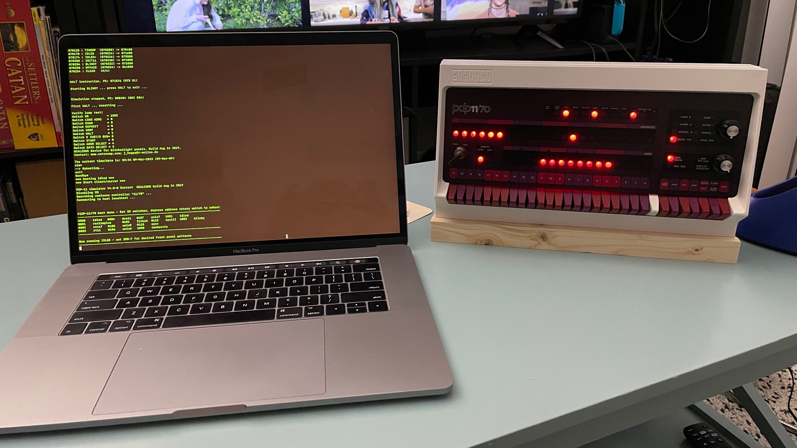

In April of 2023 I acquired the popular PiDP-11 kit from Oscar here . It is currently my favorite machine to program for. Here's a picture of me running a sample program for the first time.
I wanted to immediately start programming, so I started by entering sample programs I found online into memory using the switches located on the front of the unit. This is not an ideal long term solution, but it has taught me a lot so far.
To start messing with memory after boot up, do the following:
This is the short and simple version of events. I will explain more as we go.
Here are some good resources I have found:
Source code for all of my PDP-11 programs can be found on this GitHub page.